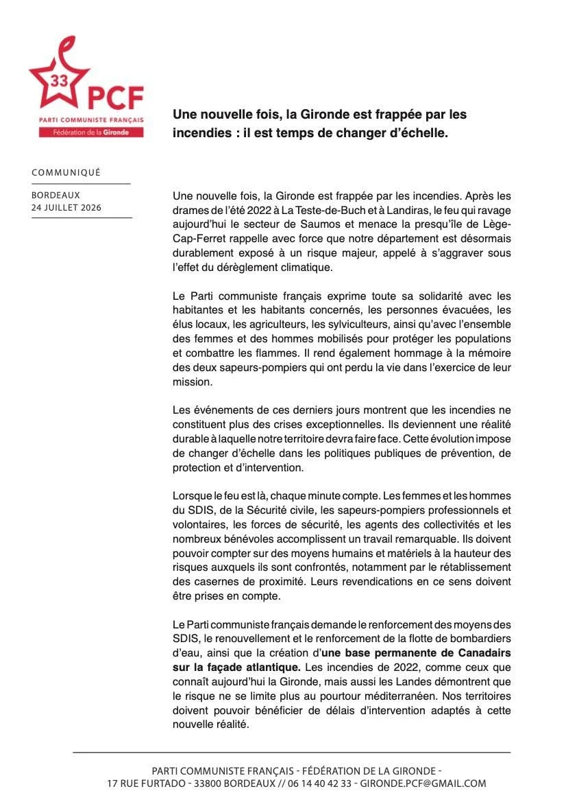
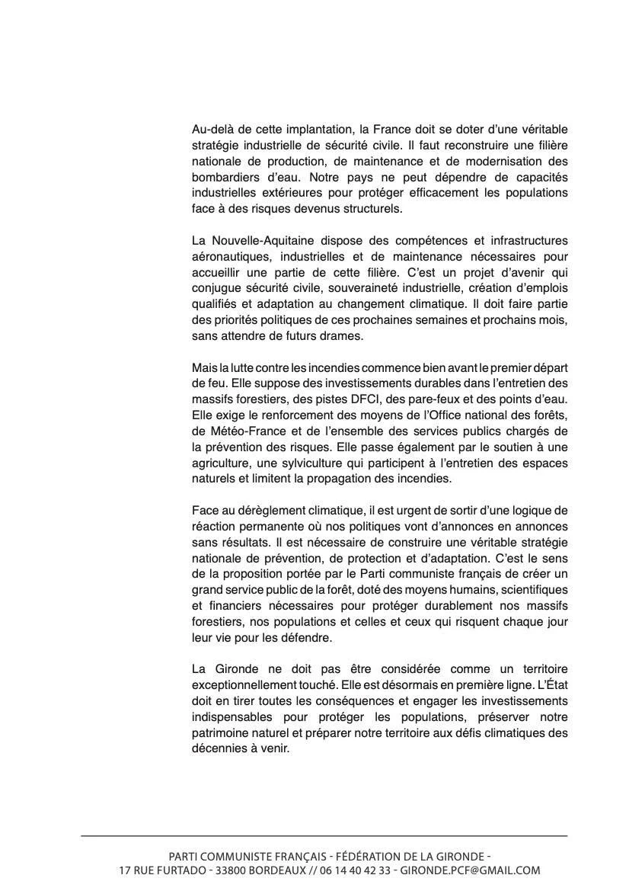

Déclaration fédérale relayée
Le PCF de Gironde appelle à renforcer la prévention des feux de forêt
Date de mise à jour indiquée par Facebook · 25 juillet 2026
Repères éditoriaux
Nous relayons la déclaration de la fédération communiste de Gironde, qui exprime sa solidarité avec les personnes touchées et évacuées. Elle demande davantage de moyens de surveillance, de prévention et d’intervention face aux incendies.
Texte de la publication · PCF Gironde
Incendies en Gironde
Alors que la Gironde est une nouvelle fois touchée par des incendies, la Fédération de la Gironde du Parti communiste français exprime sa solidarité avec les habitantes et les habitants concernés, les personnes évacuées, les élus locaux, les agriculteurs, les sylviculteurs et l’ensemble des femmes et des hommes engagés pour protéger les populations et combattre les flammes.
Ces nouveaux incendies rappellent la nécessité de renforcer et d’adapter durablement les politiques publiques de prévention, de protection des populations et d’intervention face aux feux de forêt.
Retrouvez notre déclaration complète
👇 http://pcf-gironde.fr/newsletter/CP%20Incendie%20Saumos


Sources
PCF Gironde · publication relayée par le PCF 79 · bibliothèque Facebook · AR-0002-FB-00727
À lire aussi · Incendies en Gironde. Fabien Gay demande des moyens de lutte contre les feux